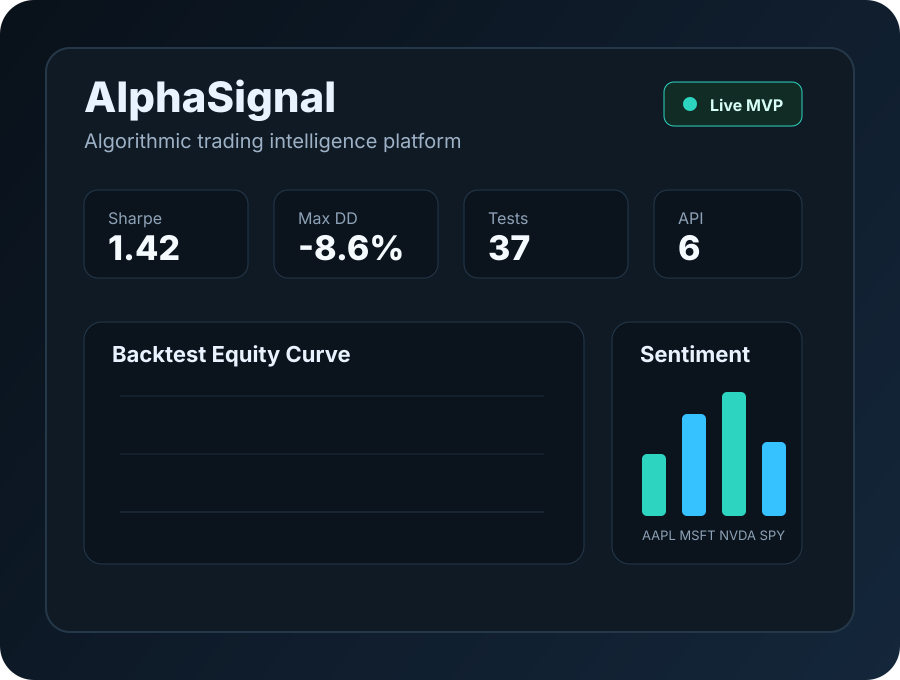

AlphaSignal

Algorithmic Trading Intelligence Platform
AlphaSignal is a full-stack portfolio MVP that combines market data ingestion, feature engineering, sentiment scoring, ML signal baselines, portfolio optimization, and backtesting behind a FastAPI service and Next.js dashboard.
The project is designed for finance-tech interviews: it demonstrates quant concepts such as Sharpe ratio, drawdown, transaction costs, look-ahead bias controls, directional accuracy, and benchmark-aware backtesting while still showing production engineering habits like typed schemas, tests, CI, and clean service boundaries.
Platform Scope
FastAPI, Next.js, TimescaleDB-ready schema, Yahoo/FRED adapters, sentiment, ML baseline, and backtesting.
Quality Gate
37 Python tests, ruff, black, mypy, Next.js typecheck/build, and zero npm audit vulnerabilities.
What I Built
- Async ingestion adapters for market and macro data.
- Technical indicators including RSI, MACD, Bollinger Bands, ATR, OBV, and returns.
- Sentiment scoring facade that is ready for FinBERT with a deterministic baseline fallback.
- Backtesting engine with lagged weights, transaction costs, fills, and portfolio state.
- Portfolio optimizer using inverse-volatility allocation.
- Dashboard-ready API endpoints and a modern Next.js dashboard.
Project Information
- Category Quant Analytics / Full Stack
- Stack Python, FastAPI, Next.js, TypeScript, SQL
- Testing Pytest, mypy, ruff, black, npm audit
- Repository GitHub
- View Repository